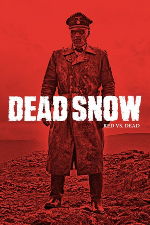
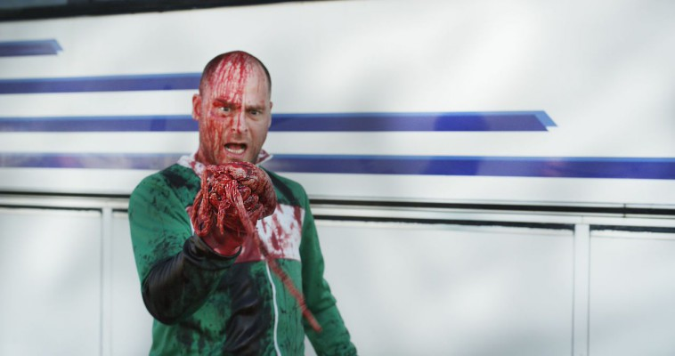
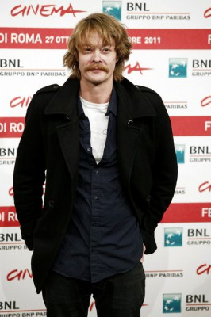
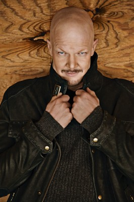
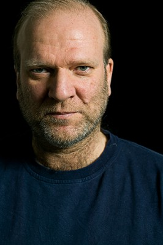

#4013 Dead Snow - Red vs. Dead
 
 IMDB-Wertung: 7.0 / 10
IMDB-Wertung: 7.0 / 10  Metascore: 0
Metascore: 0 
Martin, nach dem Gemetzel im blutroten Schnee noch schockiert vom Verlust seiner Freunde (und seines rechten Arms), flieht vor den weiterhin übel gelaunten Nazizombies und landet unfreiwillig im Krankenhaus. Niemand glaubt ihm dort die Geschichte von wiederauferstandenen Wehrmachtsschergen. Aber immerhin wird Martin nicht nur ein neuer Arm replantiert (leider eindeutig der Falsche), sondern auch unerwartete Hilfe von einem Trio amerikanischer Nerds zuteil. Während diese selbsternannte „Zombie Squad“ Richtung Norwegen aufbricht, flieht Martin vor seinen Verfolgern aus dem Hospital. Doch bald kreuzen sich seine Wege erneut mit Herzogs untoter Armee – und diesmal steht eine ganze Kleinstadt im Weg!
Jahr: 2014
Dauer: 100 Minuten
FSK: 18
Land: Norwegen Studio: Splendid FilmTonspuren:
Untertitel: Deutsch,
Auflösung: 1080p (1920x800) Größe: 3758 MB
Genre: Action, Horror, Komödie
Regisseur: Tommy Wirkola
Drehbuch: Nissar Modi
Soundtrack:
Darsteller:
-  Vegar Hoel als Martin
- Ørjan Gamst als Herzog
 Martin Starr als Daniel
Martin Starr als Daniel- Jocelyn DeBoer als Monica
- Ingrid Haas als Blake
 Stig Frode Henriksen als Glenn Kenneth
Stig Frode Henriksen als Glenn Kenneth- Hallvard Holmen als Gunga
-  Kristoffer Joner als Sidekick Zombie
- Amrita Acharia als Reidun
-  Derek Mears als Stavarin
- Christian Rubeck als Politiman
- David Skaufjord als Zombie Tanksjåfør
- Daniel Berge Halvorsen als Major Stubbe
-  Ingar Helge Gimle als Doktor Brochman
- Ivar Lykke als Tarm Zombie
- Bjarte Tjøstheim als Priest
- Charlotte Frogner als Hanna
- Jesper Sundnes als Nazi Doktor
- Tage Guddingsmo als Zombie Navigatør
- Guðmundur Ólafsson als Eldre Dame Talvik
- Carl-Magnus Adner als Bobby
- Lars Sundsbø als Truck Driver
- Hanna María Karlsdóttir als Eldre Dame Talvik
- María Guðmundsdóttir als Dame I Rullestol
- Vera Hilmarsdóttir als Budbringer Fra WW2
- Kristian Figenschow als Eldre Mann
- Laufey Elíasdóttir als Sykepleier
- Seth Sharp als Mann Utenfor Museum
- Jóhanna Axelsdóttir als Eldre Dame
- Epsen Edvardsen als Far
- Álfrún Laufeyjar-Sigurðardóttir als Ung Jente
- Thorir Sæmundsson als Politmann 2
- Jón Skúli Guðmundsson als Barn Utenfor Talvik
- Aron Valgeirsson als Barn Utenfor Talvik
- Sindri Freyr Seim Sigurðsson als Barn Utenfor Talvik
- Tommi Thor Gudmundsson als SS Zombie / Nazi Zombie , uncredited
- Halldór Magnússon als Police Officer , uncredited
Datei: X:\FSK18-Collections\Dead Snow\Dead Snow - Red vs. Dead (2014, FSK18, 1920x800).mkv seit 11.07.2016
Festplatte: FSK18
 Alle Filme aus Gruppe 'FSK18-Collections\Dead Snow'
Alle Filme aus Gruppe 'FSK18-Collections\Dead Snow'
- Dead Snow
- Dead Snow - Red vs. Dead (der aktuelle Film)